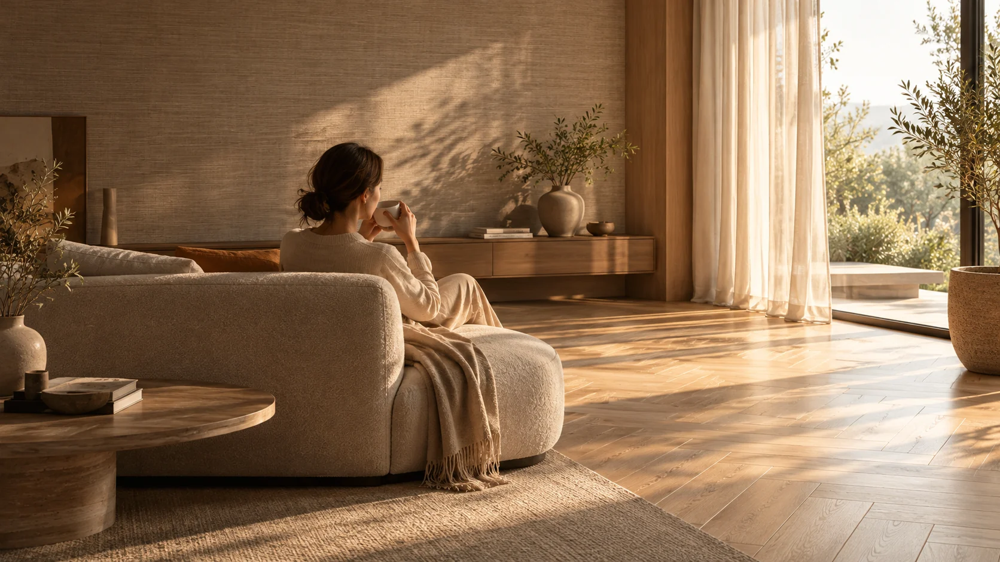

Consult & Discover
ปรึกษา เลือกสไตล์และวัสดุ Wallpaper, SPC, Vinyl หรือ Carpet ที่เหมาะกับห้อง

จำหน่ายและติดตั้ง Wallpaper, SPC, กระเบื้องยาง LVT และพรม · กรุงเทพฯ และปริมณฑล
เปลี่ยนผนังให้สวย เปลี่ยนพื้นให้ใช่
เติมเต็มทุกพื้นที่ในสไตล์ของคุณ
เพราะทั้งผนังและพื้นต่างสร้างความรู้สึกให้พื้นที่ของคุณ เลือกค้นพบวัสดุและแรงบันดาลใจที่ใช่กับ FACEWALL
งานตกแต่งที่ดีไม่ได้จบที่การเลือกวัสดุสวย แต่เริ่มจากความเข้าใจหน้างานและการติดตั้งอย่างใส่ใจ
ตัวอย่างวัสดุให้เลือกทั้งออนไลน์และออฟไลน์ ช่วยค้นหาสี ลวดลาย และผิวสัมผัส
ให้คำปรึกษาและแนะนำวัสดุตามความต้องการโดยไม่มีค่าใช้จ่าย
บริการเข้าวัดพื้นที่หน้างานฟรี ในพื้นที่ให้บริการตามที่กำหนด
ทีมช่างมืออาชีพ ดูแลการติดตั้งจนงานสวยงามพร้อมใช้งาน
งานตกแต่งที่ดี เริ่มต้นจากการทำความเข้าใจความต้องการของคุณ ไปจนถึงการส่งมอบพื้นที่พร้อมใช้งาน
ปรึกษา เลือกสไตล์และวัสดุ Wallpaper, SPC, Vinyl หรือ Carpet ที่เหมาะกับห้อง
นัดหมายเข้าวัดพื้นที่และตรวจสอบสภาพหน้างาน เพื่อประเมินวิธีติดตั้งที่เหมาะสม
สรุปวัสดุ ขอบเขตงานและราคา รวมถึงส่วนที่ต้องเตรียมพื้นที่เพิ่มเติม
ช่างติดตั้งดำเนินงาน ตรวจสอบความเรียบร้อย และส่งมอบพื้นที่พร้อมใช้งาน
* การสำรวจพื้นที่ฟรีให้บริการในกรุงเทพฯ และปริมณฑลตามเงื่อนไขและการนัดหมาย งานปรับสภาพพื้น/ผนังอาจประเมินราคาแยก
ส่งบรีฟเพื่อให้ทีมงานติดต่อกลับ ↗FACEWALL เข้าใจว่าผนังและพื้นไม่ได้เป็นเพียงองค์ประกอบของบ้าน แต่ช่วยสร้างบรรยากาศและสะท้อนสไตล์ของผู้อยู่อาศัย เราจึงตั้งใจคัดสรรวัสดุตกแต่ง พร้อมแนะนำ สำรวจหน้างาน และติดตั้งโดยทีมช่างมืออาชีพ
ลองลากแถบเพื่อชมการเปลี่ยนบรรยากาศของห้อง ก่อนเข้าสู่แกลเลอรี Before / After ของเรา

 BEFOREAFTER
BEFOREAFTERทุกพื้นผิวมีส่วนเปลี่ยนความรู้สึกของห้อง สัมผัสประสบการณ์ Before / After แล้วเลือกชมหมวด Wallpaper หรือ Flooring
Explore our showcase ภาพคู่ตัวอย่างที่ได้รับมาใช้สาธิต Before/After ไม่ใช่หลักฐานผลงานติดตั้งจริงเปิดโลกของลวดลายและพื้นผิว ผ่าน eCatalog ที่เลือกอ่านได้ตามคอลเลกชัน ไม่ต้องค้นหาสินค้าทีละรหัส
คิดจะเปลี่ยนผนังหรือเปลี่ยนพื้น ให้ FACEWALL ช่วยดูแล
ปรึกษาและนัดวัดพื้นที่ฟรี